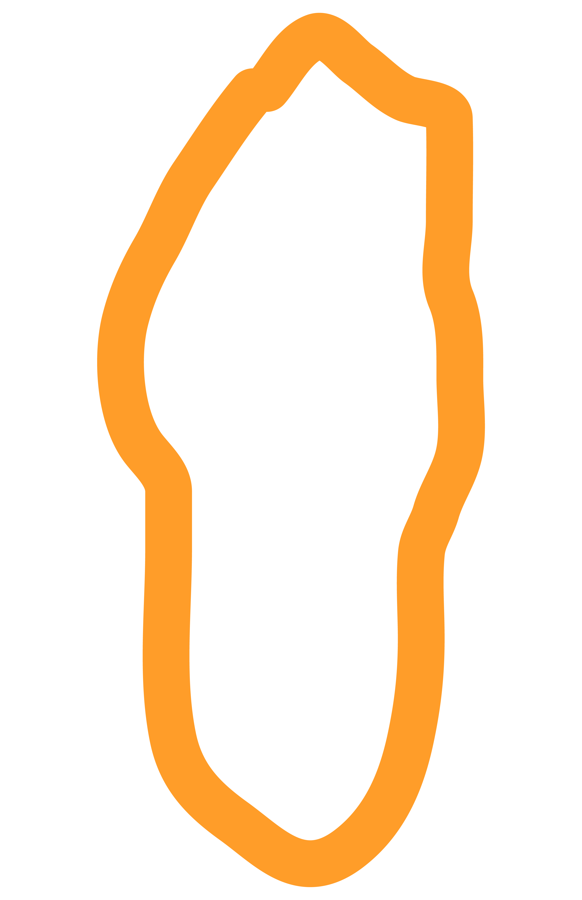

Tai Frasier
When she arrives at the high school, she is a druggie who just wants to slack off, but under Cher and Dionne's tutelage, she learns the ins and outs of social status. After a change in hair, make-up and clothing, Tai's confidence soars and she becomes comfortable with the popular clique. After a "near-death" experience at the mall, Tai's confident attitude goes into overdrive and almost poses a threat to Cher's social standing, but by the end of the film she has managed to regain Cher's respect and friendship. Tai is a sweet and awkward misfit who learns to believe in herself.
 Characters
Characters